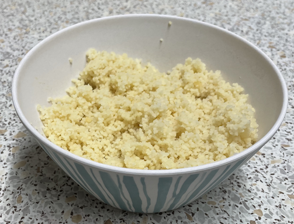

Various
Measurements
1 cup = 240ml
½ cup = 120ml
¼ cup = 60ml
Couscous
Ratio 1.4 water to couscous
Lunch: 90g couscous, 127g water

Fish fingers
Air fryer
210°C for 15 mins on bake, too crunchy
Try 200°C for 14 mins on bake